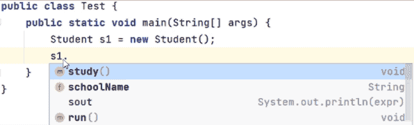
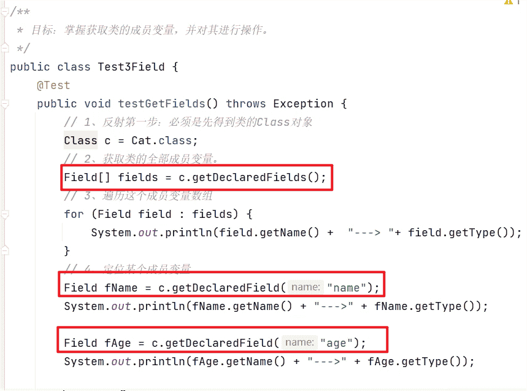
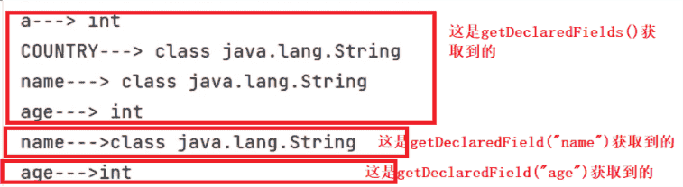

反射、注解
1. 反射
介绍的反射、动态代理、注解等知识点，在以后开发中极少用到，这些技术都是以后学习框架、或者做框架的底层源码。
接下来，我们就需要带着同学们认识一下什么是反射。其实API文档中对反射有详细的说明，我们去了解一下。在java.lang.reflect包中对反射的解释如下图所示
1 | Package java.lang.reflect |
翻译成人话就是：反射技术，指的是加载类的字节码到内存，并以编程的方法解刨出类中的各个成分（成员变量、方法、构造器等）。
反射有啥用呢？其实反射是用来写框架用的。为了方便理解，举一个见过的例子：平时我们用IDEA开发程序时，用对象调用方法，IDEA会有代码提示，idea会将这个对象能调用的方法都给你列举出来，供你选择，如果下图所示

问题是IDEA怎么知道这个对象有这些方法可以调用呢? 原因是对象能调用的方法全都来自于类，IDEA通过反射技术就可以获取到类中有哪些方法，并且把方法的名称以提示框的形式显示出来，所以你能看到这些提示了。
那记事本写代码为什么没有提示呢? 因为技术本软件没有利用反射技术开发这种代码提示的功能！
认识了反射是什么之后，介绍一下反射具体学什么？
因为反射获取的是类的信息，那么反射的第一步首先获取到类才行。由于Java的设计原则是万物皆对象，获取到的类其实也是以对象的形式体现的，叫字节码对象，用Class类来表示。获取到字节码对象之后，再通过字节码对象就可以获取到类的组成成分了，这些组成成分其实也是对象，其中每一个成员变量用Field类的对象来表示、每一个成员方法用Method类的对象来表示，每一个构造器用Constructor类的对象来表示。
如下图所示：
反射学什么？
学习获取类的信息、操作它们
- 反射第一步：加载类，获取类的字节码：Class对象
- 获取类的构造器：Constructor对象
- 获取类的成员变量：Field对象
- 获取类的成员方法：Method对象
1.1 获取类的字节码
反射的第一步：是将字节码加载到内存，我们需要获取到字节码对象。
graph LR;
1.反射第一步:加载类,获取类的字节码:Class对象
A[Student.java] --> B[Student.class]
B --字节码文件加载到内存中--> C[内存中的Student.class]比如有一个Student类，获取Student类的字节码代码有三种写法。不管用哪一种方式，获取到的字节码对象其实是同一个。
1 | public class Test1Class{ |
1.2 获取类的构造器
学习一下通过字节码对象获取构造器，并使用构造器创建对象。
获取构造器，需要用到Class类提供的几个方法，如下图所示：
| 方法 | 说明 |
|---|---|
Constructor<?>[] getConstructors() |
获取全部构造器（只能获取public修饰的） |
Constructor<?>[] getDeclaredConstructors() |
获取全部构造器（只要存在就能拿到） |
Constructor<T> getConstructor(Class<?>... parameterTypes) |
获取某个构造器（只能获取public修饰的） |
Constructor<T> getDeclaredConstructor(Class<?>... parameterTypes) |
获取某个构造器（只要存在就能拿到） |
这些方法的命名规律:
1 | get:获取 |
话不多少，上代码。假设现在有一个Cat类，里面有几个构造方法，代码如下
1 | public class Cat{ |
-
- 接下来，我们写一个测试方法，来测试获取类中所有的构造器
1 | public class Test2Constructor(){ |
运行测试方法打印结果如下
1 | com.itheima.reflect.Cat---> 参数个数：0 |
-
- 刚才演示的是获取Cat类中所有的构造器，接下来，我们演示单个构造器试一试
1 | public class Test2Constructor(){ |
打印结果如下
1 | com.itheima.reflect.Cat---> 参数个数：0 |
1.3 反射获取构造器的作用
其实构造器的作用：初始化对象并返回。
这里我们需要用到如下的两个方法，注意：这两个方法时属于Constructor的，需要用Constructor对象来调用。
| Constructor提供的方法 | 说明 |
|---|---|
T newInstance(Object... initargs) |
创建并返回此构造器对象表示的类的新实例，传入参数用于完成对象的初始化 |
public void setAccessible(boolean flag) |
设置为true，表示禁止检查访问控制（使用暴力反射），也就是允许访问那些通常被限制访问的字段、方法或构造函数。 |
constructor1和constructor2分别表示Cat类中的两个构造器。现在我要把这两个构造器执行起来
由于构造器是private修饰的，先需要调用setAccessible(true) 表示禁止检查访问控制，然后再调用newInstance(实参列表) 就可以执行构造器，完成对象的初始化了。
实际上，调用
setAccessible(true)方法表示取消对访问控制权限的检查，也就是允许访问那些通常被限制访问的字段、方法或构造函数。具体来说，在Java中，当一个成员（字段、方法或构造函数）被声明为private、protected或默认访问修饰符时，通常只能在同一类内部进行访问。但是，通过使用反射并调用
setAccessible(true)方法，可以绕过这些访问限制，从而在其他类中访问私有成员。请注意，这种绕过访问控制的行为可能会违反面向对象编程的封装原则，并且可能导致代码的可维护性和可读性下降。因此，在正常情况下，应该避免滥用
setAccessible(true)方法，只在必要的情况下使用。
代码如下：为了看到构造器真的执行， 故意在两个构造器中分别加了两个打印语句
代码的执行结果如下图所示：
1 | com.itheima.reflect.Cat---> 参数个数：0 |
1.4 反射获取成员变量&使用
其实套路是一样的，在Class类中提供了获取成员变量的方法，如下图所示。
| 方法 | 说明 |
|---|---|
public Field[] getFields() |
获取类的全部成员变量（只能获取public修饰的） |
public Field[] getDeclaredFields() |
获取类的全部成员变量（只要存在就能拿到，无论访问修饰符如何） |
public Field getField(String name) |
获取类的某个成员变量（只能获取public修饰的） |
public Field getDeclaredField(String name) |
获取类的某个成员变量（只要存在就能拿到，无论访问修饰符如何） |
这些方法的记忆规则，如下
1 | get:获取 |
- 假设有一个Cat类它有若干个成员变量，用Class类提供 的方法将成员变量的对象获取出来。

执行完上面的代码之后，我们可以看到控制台上打印输出了，每一个成员变量的名称和它的类型。

- 获取到成员变量的对象之后该如何使用呢？
在Filed类中提供给给成员变量赋值和获取值的方法，如下图所示。
| 方法 | 参数 | 说明 |
|---|---|---|
void set(Object obj, Object value) |
obj: 要设置属性值的对象实例。value: 要设置的属性值 |
设置对象的属性值 |
Object get(Object obj) |
obj: 要获取属性值的对象实例 |
获取对象的属性值 |
public void setAccessible(boolean flag) |
flag: 是否取消访问控制检查 |
设置访问权限（通过暴力反射取消访问控制），若设置为 true，则取消检查，允许使用暴力反射修改对象的私有属性或调用私有方法。 |
再次强调一下设置值、获取值的方法时Filed类的需要用Filed类的对象来调用，而且不管是设置值、还是获取值，都需要依赖于该变量所属的对象。代码如下
执行代码，控制台会有如下的打印
1.5 反射获取成员方法
在Java中反射包中，每一个成员方法用Method对象来表示，通过Class类提供的方法可以获取类中的成员方法对象。如下下图所示
| 方法 | 说明 |
|---|---|
Method[] getMethods() |
获取类的全部成员方法（只能获取 public 修饰的） |
Method[] getDeclaredMethods() |
获取类的全部成员方法（只要存在就能拿到） |
Method getMethod(String name, Class<?>... parameterTypes) |
获取类的某个成员方法（只能获取 public 修饰的） |
Method getDeclaredMethod(String name, Class<?>... parameterTypes) |
获取类的某个成员方法（只要存在就能拿到） |
接下来我们还是用代码演示一下：假设有一个Cat类，在Cat类中红有若干个成员方法
1 | public class Cat{ |
接下来，通过反射获取Cat类中所有的成员方法，每一个成员方法都是一个Method对象
1 | public class Test3Method{ |
执行上面的代码，运行结果如下图所示：打印输出每一个成员方法的名称、参数格式、返回值类型
1 | getName-->0-->class java.lang.String |
也能获取单个指定的成员方法，如下图所示
获取到成员方法之后，有什么作用呢？
在Method类中提供了方法，可以将方法自己执行起来。
| Method类中提供的方法 | 说明 |
|---|---|
public Object invoke(Object obj, Object... args) |
触发某个对象的特定方法执行,obj: 要调用该方法的对象 args: 该方法的输入参数 |
public void setAccessible(boolean flag) |
设置访问权限（通过暴力反射取消访问控制），若设置为 true，则取消检查，允许使用暴力反射修改对象的私有属性或调用私有方法。 |
把run()方法和eat(String name)方法执行起来。看分割线之下的代码
1 | public class Test3Method{ |
打印结果如下图所示：run()方法执行后打印猫跑得贼快~~，返回null； eat()方法执行完，直接返回猫最爱吃:鱼儿
1 | 空参数构造方法执行了 |
1.6 反射的应用
反射的核心作用是用来获取类的各个组成部分并执行他们。一直说反射使用来写框架的，接下来，我们就写一个简易的框架。
需求是让我们写一个框架，能够将任意一个对象的属性名和属性值写到文件中去。不管这个对象有多少个属性，也不管这个对象的属性名是否相同。
分析一下该怎么做
1 | 1.先写好两个类，一个Student类和Teacher类 |
写一个ObjectFrame表示自己设计的框架，代码如下图所示
1 | public class ObjectFrame{ |
使用自己设计的框架，往文件中写入Student对象的信息和Teacher对象的信息。
先准备好Student类和Teacher类
1 | public class Student{ |
1 | public class Teacher { |
创建一个测试类，在测试中类创建一个Student对象，创建一个Teacher对象，用ObjectFrame的方法把这两个对象所有的属性名和属性值写到文件中去。
1 | public class Test5Frame{ |
打开data.txt文件，内容如下图所示，就说明我们这个框架的功能已经实现了
1 | ---------Student--------- |
2. 注解
2.1 认识注解&定义注解
先来认识一下什么是注解？
Java注解是代码中的特殊标记，比如@Override、@Test等，作用是让其他程序根据注解信息决定怎么执行该程序。
比如：Junit框架的@Test注解可以用在方法上，用来标记这个方法是测试方法，被@Test标记的方法能够被Junit框架执行。
再比如：@Override注解可以用在方法上，用来标记这个方法是重写方法，被@Override注解标记的方法能够被IDEA识别进行语法检查。
- 注解不光可以用在方法上，还可以用在类上、变量上、构造器上等位置。
上面我们说的@Test注解、@Overide注解是别人定义好给我们用的，将来如果需要自己去开发框架，就需要我们自己定义注解。
接着我们学习自定义注解
自定义注解的格式如下图所示
1 | public @interface 注解名称 { |
比如：现在我们自定义一个MyTest注解
1 | public MyTest{ |
定义好MyTest注解之后，我们可以使用MyTest注解在类上、方法上等位置做标记。注意使用注解时需要加@符号，如下
1 |
|
注意：当注解中只有一个属性且其名称为"value"时，可以省略"value"这个属性名，直接写属性值即可。比如现在重新定义一个MyTest2注解
1 | public MyTest2{ |
定义好MyTest2注解后，再将@MyTest2标记在类上，此时value属性名可以省略，代码如下
1 | //等价于 @MyTest2(value="孙悟空") |
到这里关于定义注解的格式、以及使用注解的格式就学习完了。
注解本质是什么呢？
想要搞清楚注解本质是什么东西，我们可以把注解的字节码进行反编译，使用XJad工具进行反编译。经过对MyTest1注解字节码反编译我们会发现：
1 | 1.MyTest1注解本质上是接口，每一个注解接口都继承子Annotation接口 |
2.2 元注解
什么是元注解？
元注解是修饰注解的注解。这句话虽然有一点饶，但是非常准确。我们看一个例子
1 | @Retention(RetentionPolicy.RUNTIME) //@Retention注解是修饰Test注解的注解 |
接下来分别看一下@Target注解和@Retention注解有什么作用，如下图所示
1 | 是用来声明注解只能用在那些位置，比如：类上、方法上、成员变量上等 |
@Target
@Target 作用：声明被修饰的注解只能在哪些位置使用
@Target(ElementType.TYPE)
- TYPE：类，接口
- FIELD：成员变量
- METHOD：成员方法
- PARAMETER：方法参数
- CONSTRUCTOR：构造器
- LOCAL_VARIABLE：局部变量
@Retention
@Retention 作用：指定注解的保留策略周期。
@Retention(RetentionPolicy.RUNTIME)
SOURCE（源码级别）
仅在源码阶段有效，不会被保留到编译后的字节码文件中。CLASS（默认值）
在编译后的字节码文件中保留，但在运行阶段不起作用。RUNTIME（开发常用）
在运行阶段一直保留有效。这是开发中常用的保留策略。
- @Target元注解的使用：比如定义一个MyTest3注解，并添加@Target注解用来声明MyTest3的使用位置
1 | //声明@MyTest3注解只能用在类上 |
如果我们定义MyTest3注解时，使用@Target注解属性值写成下面样子
1 | //声明@MyTest3注解只能用在类上和方法上 |
到这里@Target元注解的使用就演示完毕了。
- @Retetion元注解的使用：定义MyTest3注解时，给MyTest3注解添加@Retetion注解来声明MyTest3注解保留的时期
1 | 是用来声明注解保留周期，比如：源代码时期、字节码时期、运行时期 |
1 | //声明@MyTest3注解只能用在类上和方法上 |
2.3 解析注解
可以通过反射技术把类上、方法上、变量上的注解对象获取出来，然后通过调用方法就可以获取注解上的属性值了。把获取类上、方法上、变量上等位置注解及注解属性值的过程称为解析注解。
解析注解套路如下
1 | 1.如果注解在类上，先获取类的字节码对象，再获取类上的注解 |
-
Class、Method、Field,Constructor、都实现了AnnotatedElement接口，它们都拥有解析注解的能力。
AnnotatedElement接口提供了解析注解的方法 说明 参数含义 public Annotation[] getDeclaredAnnotations()获取当前对象上面的注解 无 public T getDeclaredAnnotation(Class<T> annotationClass)获取指定的注解对象 annotationClass：要获取的注解类型的Classpublic boolean isAnnotationPresent(Class<Annotation> annotationClass)判断当前对象上是否存在某个注解 annotationClass：要判断的注解类型的Class
解析来看一个案例，来演示解析注解的代码编写
按照需求要求一步一步完成
① 先定义一个MyTest4注解
1 | //声明@MyTest4注解只能用在类上和方法上 |
② 定义有一个类Demo
1 |
|
③ 写一个测试类AnnotationTest3解析Demo类上的MyTest4注解
1 | public class AnnotationTest3{ |